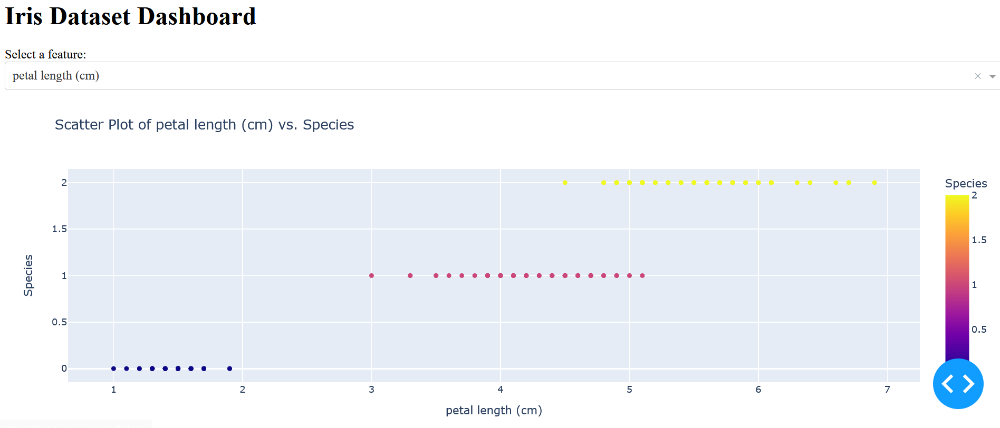
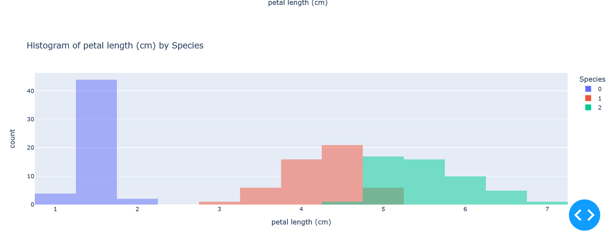

Project
Creating a dashboard based on the Iris dataset is a great way to visualize and explore the data. In this example, I'll provide you with a simple Python-based dashboard using the Dash library, which is built on top of Flask and Plotly. To run this code, make sure you have Dash and Plotly installed.
import dash
import dash_core_components as dcc
import dash_html_components as html
from dash.dependencies import Input, Output
import pandas as pd
import plotly.express as px
from sklearn.datasets import load_iris
# Load the Iris dataset
iris = load_iris()
iris_df = pd.DataFrame(data=iris.data, columns=iris.feature_names)
iris_df['target'] = iris.target
species_names = iris.target_names
# Initialize the Dash app
app = dash.Dash(__name__)
# Define the layout of the dashboard
app.layout = html.Div([
html.H1("Iris Dataset Dashboard"),
html.Div([
html.Label("Select a feature:"),
dcc.Dropdown(
id='feature-dropdown',
options=[
{'label': feature, 'value': feature}
for feature in iris_df.columns[:-1] # Exclude the target column
],
value=iris_df.columns[0] # Default feature
),
]),
dcc.Graph(id='scatter-plot'),
dcc.Graph(id='histogram-plot')
])
# Define callback to update scatter plot
@app.callback(
Output('scatter-plot', 'figure'),
Input('feature-dropdown', 'value')
)
def update_scatter_plot(selected_feature):
scatter_fig = px.scatter(
iris_df,
x=selected_feature,
y='target',
color='target',
labels={'target': 'Species'},
title=f'Scatter Plot of {selected_feature} vs. Species'
)
scatter_fig.update_xaxes(title=selected_feature)
return scatter_fig
# Define callback to update histogram plot
@app.callback(
Output('histogram-plot', 'figure'),
Input('feature-dropdown', 'value')
)
def update_histogram_plot(selected_feature):
histogram_fig = px.histogram(
iris_df,
x=selected_feature,
color='target',
barmode='overlay',
labels={'target': 'Species'},
title=f'Histogram of {selected_feature} by Species'
)
histogram_fig.update_xaxes(title=selected_feature)
return histogram_fig
# Run the Dash app
if __name__ == '__main__':
app.run_server(debug=True)This code defines a simple Dash dashboard that allows you to select a feature from the Iris dataset and displays both a scatter plot and a histogram based on the selected feature. You can run this code, and it will open a web application on your local machine where you can interact with the data.
Results:
 Make sure to adjust the styling and layout as needed to fit your preferences. You can also enhance this dashboard by adding more features, filters, or additional visualizations.